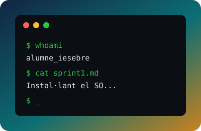

Alumne/a: Joan Lloret Gaseni
Curs: 2026-2027
Centre: IES Ebre
Repositori: sistemes_operatius
Veure l'índex de sprints →
Llicència d'aquest treball
Per defecte, tot el contingut d'aquesta web es publica amb la llicència Creative Commons Reconeixement–NoComercial–CompartirIgual (CC BY-NC-SA 4.0): qualsevol persona pot veure i compartir el teu treball, sempre que et citi com a autor/a i no en faci un ús comercial.
Pots mantenir-la o triar-ne una altra a creativecommons.org/choose; només cal que actualitzis l'enllaç i la insígnia d'aquí sota i del peu de cada pàgina.